1 使用 Grafana 构建你的第一个仪表盘
时常对一些工具的存在觉得理所当然。比如说，需要计算资源的时候，一个配置文件就可以要来两百台虚拟化好的机子。需要试下缓存？点下鼠标就可以要到几十个配置好的 Redis 结点。最省心的是，这些工具都已经根据工作流配置好了：鉴权、优化、网络连接等等通通不用你操心。
拿 Grafana 和服务监控来说：
- 服务监控到底咋配置？怎样保证数据安全？
- 保证健康的服务到底应该监控些什么？
- 配置好后的仪表盘为啥消失了？
- 查询 Query 又该咋写？
1 Grafana 是什么
开始前首先要问一个问题，Grafana 到底是什么。
Grafana 是一个监控仪表系统，它是由 Grafana Labs 公司开源的的一个系统监测 (System Monitoring) 工具。它可以大大帮助你简化监控的复杂度，你只需要提供你需要监控的数据，它就可以帮你生成各种可视化仪表。同时它还有报警功能，可以在系统出现问题时通知你。
Grafana 不对数据源作假设，它支持以下各种数据，也就是说如果你的数据源是以下任意一种，它都可以帮助生成仪表。同时在市面上，如果 Grafana 称第二，那么应该没有敢称第一的仪表可视化工具了。因此，如果你搞定了 Grafana，它几乎是一个会陪伴你到各个公司的一件称心应手的兵器。
Grafana 支持的数据源
- Prometheus 本文中的例子，你没听过也没关系不影响阅读，把它想象成带时间戳的 MySQL 就好
- Graphite
- OpenTSDB
- InfluxDB
- MySQL/PostgreSQL
- Microsoft SQL Server
- 等等
1-1 什么情况下会用到 Grafana
在任何需要监控系统运行状况的地方就大概率会用到仪表盘，而用到仪表盘的时候就可以用 Grafana （不管你用什么语言）
1-2 安装和配置 Grafana
为了简化各种系统不一致的乱七八糟问题，我们用 Docker 来安装 Grafana。
Docker 的配置文件如下，就算你从来没用过 docker 也不用操心，我会在下文里一行一行讲明白。请不要复制粘贴代码，直接到本文的 GitHub 页 clone 代码即可，我会保证 GitHub 上的代码处理最新状态：https://github.com/Kalasearch/grafana-tutorial
version: '3.4'
services:
prometheus:
image: prom/prometheus
container_name: prometheus
hostname: prometheus
ports:
- 9090:9090
volumes:
- ./prometheus.yml:/etc/prometheus/prometheus.yml
prometheus-exporter:
image: prom/node-exporter
container_name: prometheus-exporter
hostname: prometheus-exporter
ports:
- 9100:9100
grafana:
image: grafana/grafana
container_name: grafana
hostname: grafana
ports:
- 3000:3000
volumes:
- ./grafana.ini:/etc/grafana/grafana.ini
在这里我们启动了三个服务
- Prometheus 普罗米修斯时序数据库，用来存储和查询你的监控数据
- Promethues-exporter 一个模拟数据源，用来监控你本机的状态，比如有几个 CPU，CPU 的负载之类
- Grafana 本尊
在 clone 了代码之后，在你的本地运行 docker-compose up，应该会看到类似：
在跑起来服务之后，到你的浏览器中，复制 http://localhost:3000应该就可以看到 Grafana 跑起来的初始登录界面。初始的用户名是 admin，密码也是 admin。输入之后，会要求你改密码
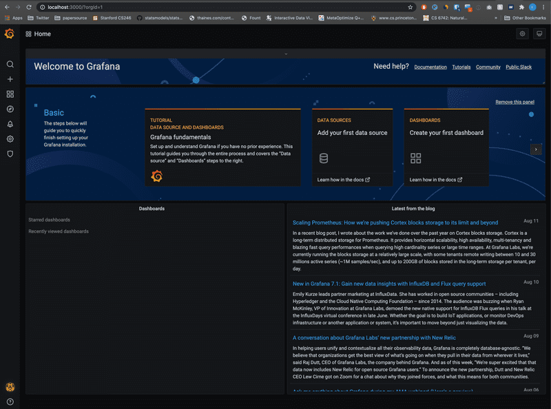
到这里，你的 Grafana 就已经搭起来了。注意到 Docker 的配置文件中我们创建了三个服务，这三个服务之间分别有什么关系呢？
2 Grfana 工作原理
上面说到，Grafana 是一个仪表盘，而仪表盘必然是用来显示数据的。
Grafana 本身并不负责数据层，它只提供了通用的接口，让底层的数据库可以把数据给它。而我们起的另一个服务，叫 Prometheus （中文名普罗米修斯数据库）则是负责存储和查询数据的。
也就是说，Grafana 每次要展现一个仪表盘的时候，会向 Prometheus 发送一个查询请求。
那么配置里的另一个服务 Prometheus-exporter 又是什么呢？
这个就是你真正监测的数据来源了，Prometheus-exporter 这个服务，会查询你的本地电脑的信息，比如内存还有多少、CPU 负载之类，然后将数据导出至普罗米修斯数据库。
在真实世界中，你的目的是监控你自己的服务，比如你的 Web 服务器，你的数据库之类。
那么你就需要在你自己的服务器中把数据发送给普罗米修斯数据库。当然，你完全可以把数据发送给 MySQL (Grafana 也支持)，但普罗米修斯几乎是标配的时序数据库，强烈建议你用。
用一张图来说明它们之间的关系：
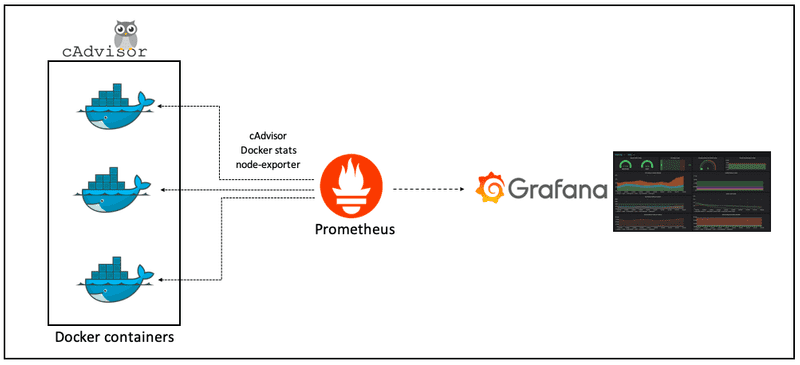
这里，最左边的 Docker 服务会将服务的数据发送给中间的普罗米修斯（对应上文的 Prometheus-exporter），而最右边的 Grafana 会查询中间的普罗米修斯，来展示仪表盘。
2 搭建你的第一个仪表盘
2-1 第 1 步 - 设置数据源
进入 Grafana 后，在左侧你会发现有一个 Data Source 即数据源选项
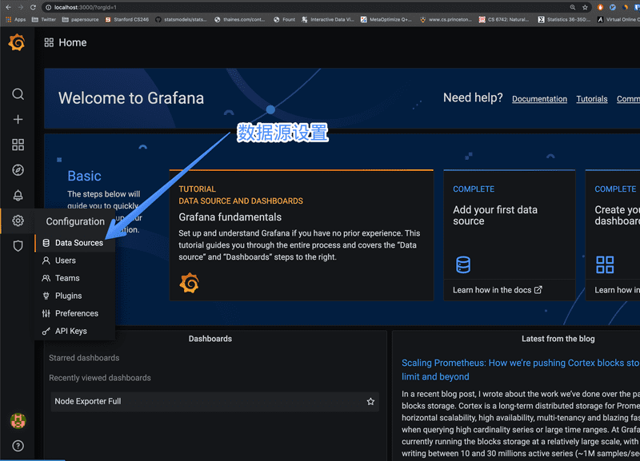
点击后进入，点 Add Data Source 即添加数据源，选择 Prometheus
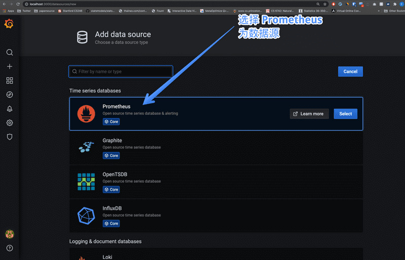
之后设置数据源 URL。请注意，Promethues 的工作原理（下一个教程中会讲）是通过轮询一个 HTTP 请求来获取数据的，而 Grafana 在获取数据源的时候也是通过一个 HTTP 请求，因此这个地方你需要告诉 Grafana 你的 Prometheus 的数据端点是什么。
这里我们填入 http://prometheus:9090 就可以了。
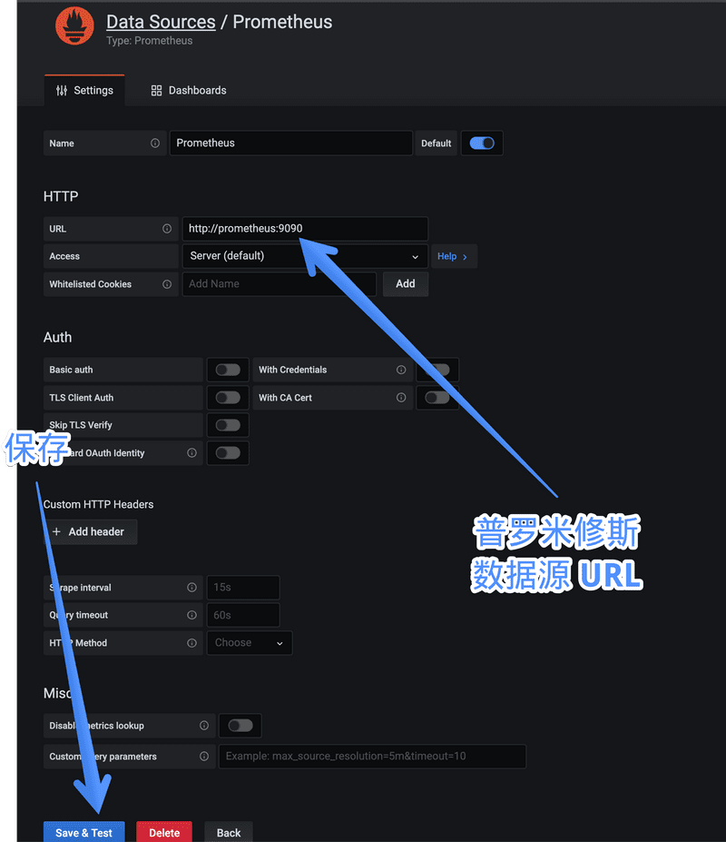
点确认时一定要确认出现 Data source is working 这个检测，这时表明你的 Grafana 已经跟普罗米修斯说上话了
2-2 第 2 步 - 导入 Dashboard
在 Grafana 里，仪表盘的配置可以通过图形化界面进行，但配置好的仪表盘是以 JSON 存储的。这也就是说，如果你把你的 JSON 数据分享出去，别人导入就可以直接导入同样的仪表盘（前提是你们的监测数据一样）。
对于我们的例子来说，回忆一下，因为我们用了 prometheus-exporter 也就是本机的系统信息监控，那么我们可以先找一个同样用了这个数据源的仪表盘。在 Grafana 网站上，你其实可以找到很多别人已经做好的仪表，可以用来监测非常多标准化的服务。
Grafana 的仪表盘市场：https://grafana.com/grafana/dashboards
比如说针对以下一些服务的标准仪表盘就可以在这里找到
- JVM
- Spring Boot
- MySQL 监控
- Laravel 监控
那么，这里我们就用一个标准的仪表盘：https://grafana.com/grafana/dashboards/1860
在左侧的加号里，点 Import 即导入，在出现的界面中填入 1860 即我们要导入的仪表盘编号即可。
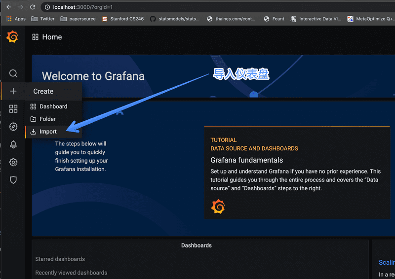
然后填入你需要的信息，比如仪表盘名字等
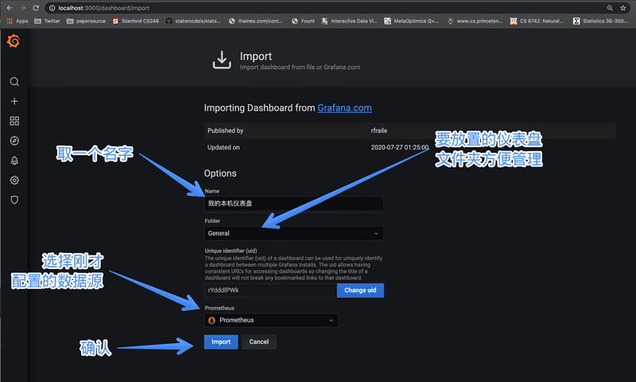
确认之后 Grafana 就会根据你的本机信息，生成类似 CPU 负载，内存和 I/O 之类的信息。我的磁盘状况如图：
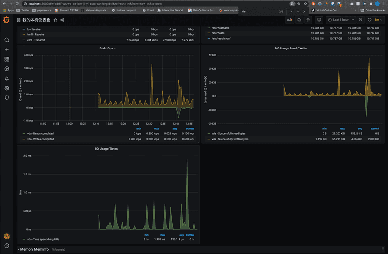
要注意的是，这里的信息真正监控的是你的 Docker 中的系统信息。如果你只给你的 Docker 分配 1 个核和 2G 内存，那么这里应该看到的就是 1 个核和 2G 内存
2-3 第 3 步 - 生成和创建新的仪表盘
包括如何用 Prometheus 查询数据
普罗米修斯本身也是个非常大的话题，我们会在之后的博客中继续讨论。普罗米修斯包括所有其它时序数据库通常都会定义一个查询语言，比如说 PromQL，如果需要熟练地构建仪表盘的话，需要对这个查询语言有一定了解。
如何手动生成一个仪表盘
假设你已经按上面的步骤生成了一个基本的仪表盘，那么现在可以开始手动添加仪表盘了。同样是点左侧的加号，点 Dashboard 就可以进入添加仪表盘的界面。
这里我们选择一个数据叫 scrape_duration_seconds，先不用管它的含义是什么，就当它是双 11 的销售额好了：
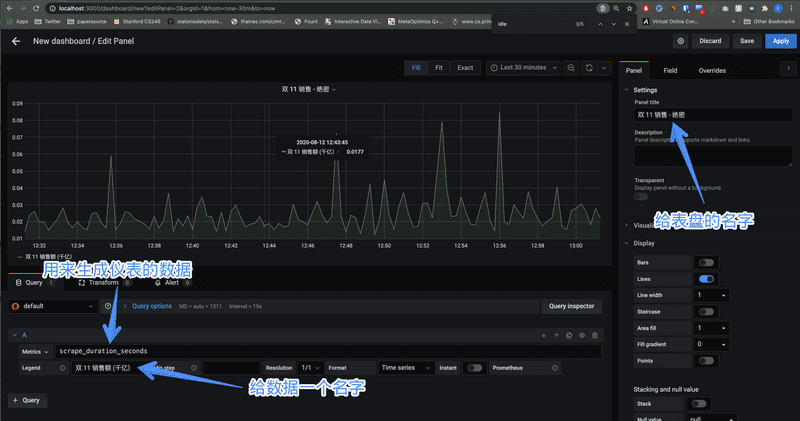
添加好后点右上角的 Apply 或 Save 你的仪表盘就被保存了。
4 使用 Grafana 创建可视化面板
Grafana 是一个监控仪表系统，它是由 Grafana Labs 公司开源的的一个系统监测工具，它可以大大帮助我们简化监控的复杂度，我们只需要提供需要监控的数据，它就可以帮助生成各种可视化仪表，同时它还有报警功能，可以在系统出现问题时发出通知。
Grafana 支持许多不同的数据源，每个数据源都有一个特定的查询编辑器，每个数据源的查询语言和能力都是不同的，我们可以把来自多个数据源的数据组合到一个仪表板，但每一个面板被绑定到一个特定的数据源。目前官方支持以下数据源：
- Alertmanager
- AWS CloudWatch
- Azure Monitor
- Elasticsearch
- Google Cloud Monitoring
- Graphite
- InfluxDB
- Loki
- Microsoft SQL Server (MSSQL)
- MySQL
- OpenTSDB
- PostgreSQL
- Prometheus
- Jaeger
- Zipkin
- Tempo
我们这里当然重点需要介绍的就是 Prometheus 这个数据源了。
安装
接下来我们就来安装 Grafana，Grafana 本身是非常轻量级的，不会占用大量资源，此外 Grafana 需要一个数据库来存储其配置数据，比如用户、数据源和仪表盘等，目前 Grafana 支持 SQLite、MySQL、PostgreSQL 3 种数据库，默认使用的是 SQLite，该数据库文件会存储在 Grafana 的安装位置，所以需要对 Grafana 的安装目录进行持久化。
要安装 Grafana 的方式有很多，我们这里使用的是 CentOS 系统，可以在 Grafana 官方下载页面筛选合适的版本 https://grafana.com/grafana/download?edition=oss&platform=linux 根据自己的需求来进行安装，比如我们这里直接使用 rpm 包进行安装：
➜ wget https://dl.grafana.com/oss/release/grafana-8.2.1-1.x86_64.rpm
➜ sudo yum install grafana-8.2.1-1.x86_64.rpm
安装完成后我们就可以使用 systemd 来管理 Grafana：
☸ ➜ sudo systemctl daemon-reload
☸ ➜ sudo systemctl enable grafana-server
☸ ➜ sudo systemctl start grafana-server
☸ ➜ sudo systemctl status grafana-server
默认的启动配置环境变量位于 /etc/sysconfig/grafana-server 文件中：
☸ ➜ cat /etc/sysconfig/grafana-server
GRAFANA_USER=grafana
GRAFANA_GROUP=grafana
GRAFANA_HOME=/usr/share/grafana
LOG_DIR=/var/log/grafana
DATA_DIR=/var/lib/grafana
MAX_OPEN_FILES=10000
CONF_DIR=/etc/grafana
CONF_FILE=/etc/grafana/grafana.ini
RESTART_ON_UPGRADE=true
PLUGINS_DIR=/var/lib/grafana/plugins
PROVISIONING_CFG_DIR=/etc/grafana/provisioning
# Only used on systemd systems
PID_FILE_DIR=/var/run/grafana
从上面文件中可以找到 Grafana 的各种数据配置路径，比如数据目录、日志目录、插件目录等等，正常启动完成后 Grafana 会监听在 3000 端口上，所以我们可以在浏览器中打开 Grafana 的 WebUI。
默认的用户名和密码为 admin，也可以在配置文件 /etc/grafana/grafana.ini 中配置 admin_user 和 admin_password 两个参数来进行覆盖。
当然如果我们想要部署一个高可用版本的 Grafana 的话，那么使用 SQLite 数据库就不行了，需要切换到 MySQL 或者 PostgreSQL，我们可以在 Grafana 配置的 [database] 部分找到数据库的相关配置，Grafana 会将所有长期数据保存在数据库中，然后部署多个 Grafana 实例使用同一个数据库即可实现高可用。
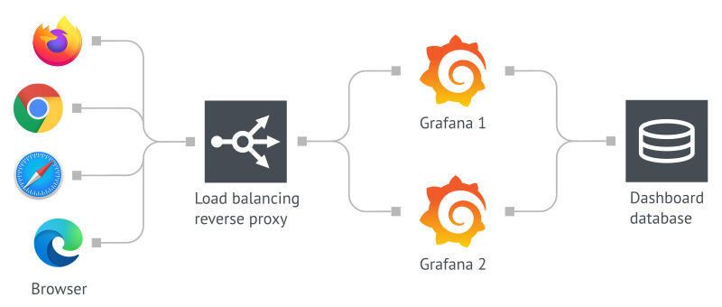
创建面板
面板（Panel）是 Grafana 中基本可视化构建块，每个面板都有一个特定于面板中选择数据源的查询编辑器，每个面板都有各种各样的样式和格式选项，面板可以在仪表板上拖放和重新排列，它们也可以调整大小，所以要在 Grafana 上创建可视化的图表，面板是我们必须要掌握的知识点。
数据源
在创建面板之前我们需要指定我们的面板数据来源，也就是数据源，Grafana 支持多种数据源，我们这里当然使用 Prometheus 作为数据源来进行说明。在 Grafana 左侧工具栏选择 Configuration，点击到下面的 Data sources，打开添加数据源的页面：
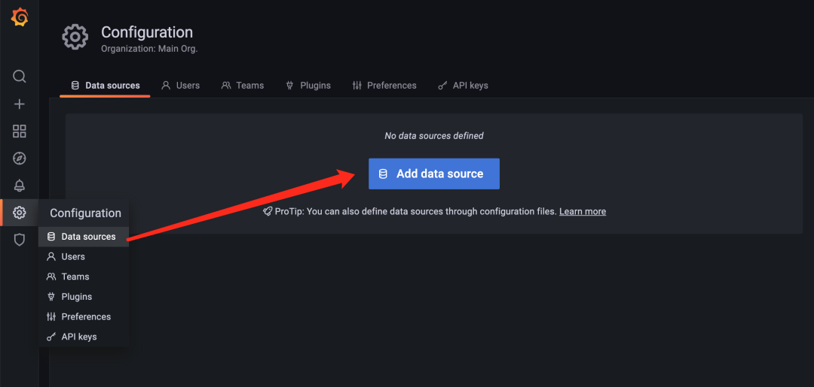
选择第一项 Prometheus 数据源进行配置：
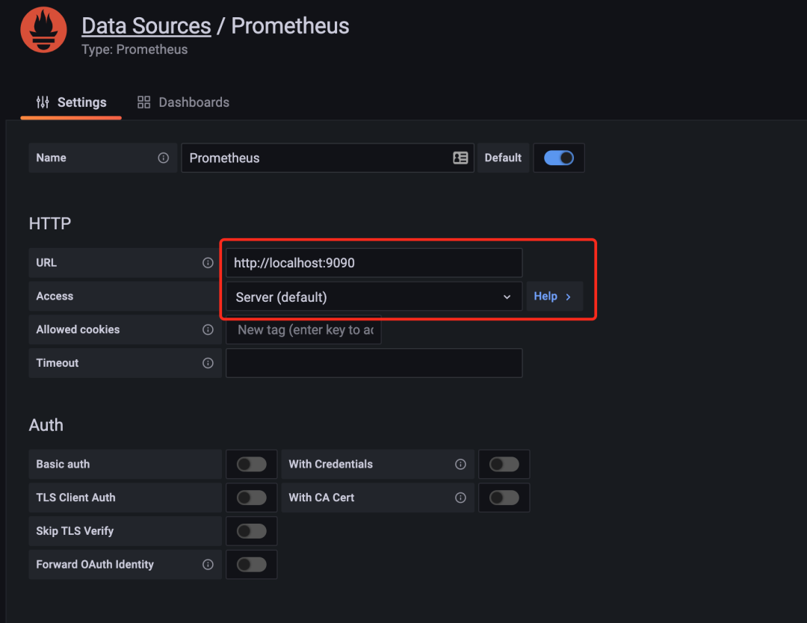
在 HTTP 项中配置 URL 地址为 http://localhost:9090，其实就是 Prometheus 的地址，由于我们这里 Grafana 和 Prometheus 都在同一个节点上，所以用 localhost 即可访问，当然用 IP 也可以，Access 选择默认的 Server 代理方式，这样就相当于 Grafana 程序去访问 Prometheus 而不是在浏览器端去访问，如果 Prometheus 配置有认证，则还需要在下发配置 Auth 信息，配置完成后，拉到最下方点击 Save & test，提示添加成功即表面数据源添加成功了。然后在数据源列表中就会出现我们刚刚添加的 Prometheus 这个数据源了：
添加面板
面板是属于某一个 Dashboard 的，所以我们需要先创建一个 Dashboard，在侧边栏点击 + 切换到 Dashboard 下面开始创建 Dashboard：
在默认创建的新的 Dashboard 中就有一个空的面板，点击 Add an empty panel 即可开始添加面板：
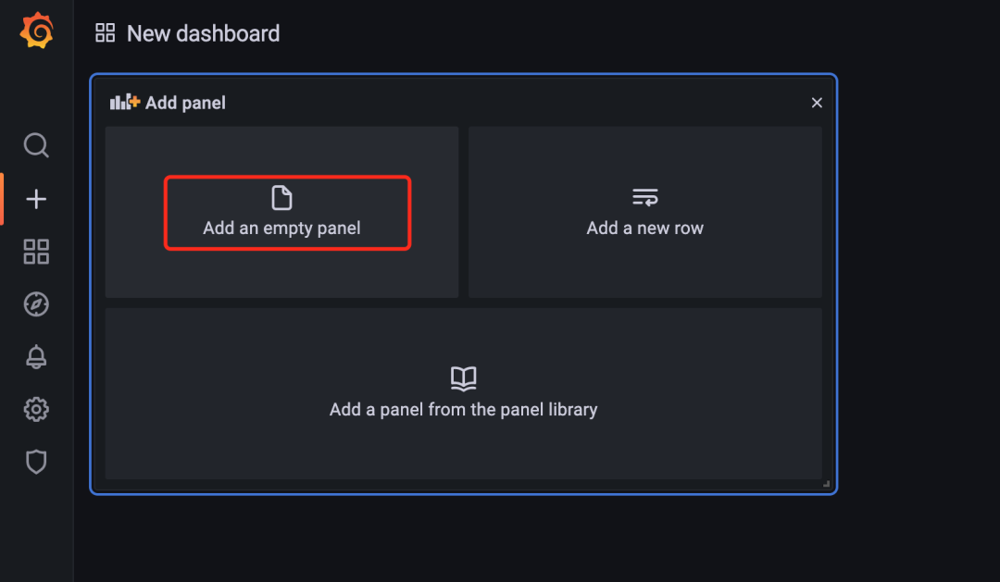
进入面板编辑器后即可添加面板了，中间位置是查询语句的显示结果，下方是用于配置查询语句的地方，左侧可以选择面板显示的类型，面板元信息，比如标题、描述信息等。
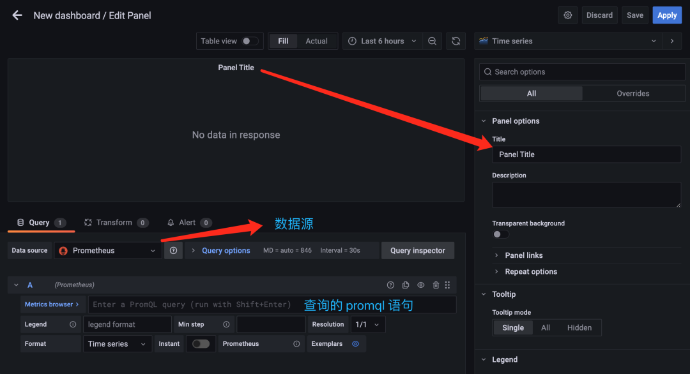
比如我们现在就要来查询节点的 CPU 使用率，前面在 node_exporter 章节中已经学习了该监控数据的查询语句为(1 - sum(rate(node_cpu_seconds_total{mode="idle"}[5m])) by (instance) / sum(rate(node_cpu_seconds_total[5m])) by (instance) ) * 100，只需要将该语句填充到查询的 PromQL 语句中即可在上面显示出监控的结果：
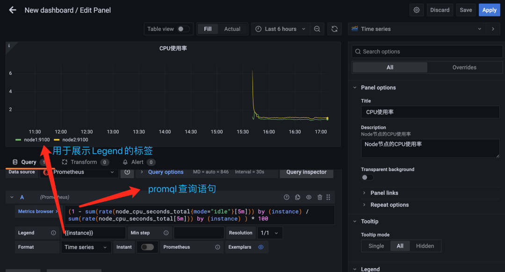
用同样的方式我们可以创建一个用于查询节点内存使用率的面板：
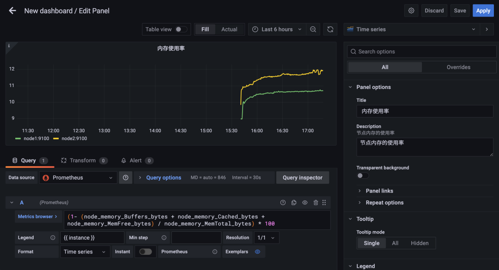
添加参数
现在我们在一个 Dashboard 中添加了两个 Panel，我们可以很明显看到会直接将所有的节点信息展示在同一个面板中，但是如果有非常多的节点的话数据量就非常大了，这种情况下我们最好的方式是将节点当成参数，可以让用户自己去选择要查看哪一个节点的监控信息，要实现这个功能，我们就需要去添加一个以节点为参数的变量来去查询监控数据。
点击 Dashboard 页面右上方的 Dashboard settings 按钮，进入配置页面：
在该 Settings 页面可以来对整个 Dashboard 进行配置，比如名称、标签、变量等：
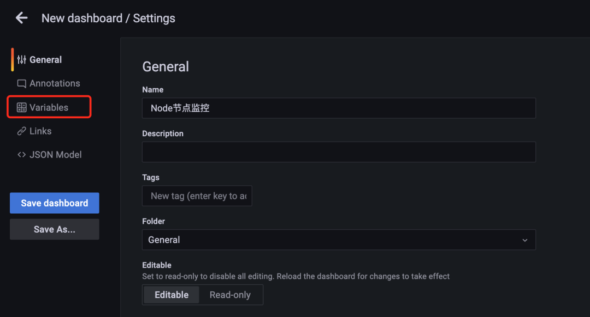
这里我们点击左边的 Variables 添加一个变量，变量支持更具交互性和动态性的仪表板，我们可以在它们的位置使用变量，而不是在指标查询中硬编码，变量显示为 Dashboard 顶部的下拉列表，这些下拉列表可以轻松更改仪表板中显示的数据。
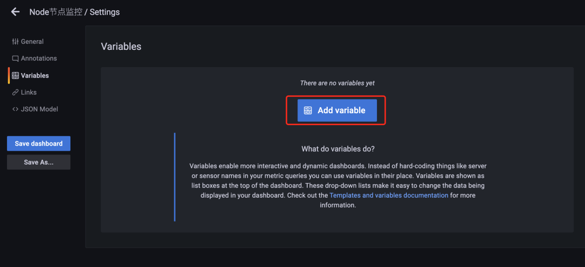
为了能够选择节点数据，这里我们定义了一个名为 instance 的变量名，但是定义的这个变量值从哪个地方获取呢？
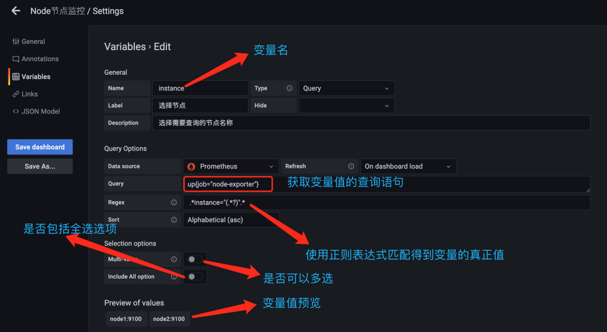
监控节点的相关指标是来源于名为 node-exporter 的任务，我们可以通过查询 up 来获取所有的监控实例：
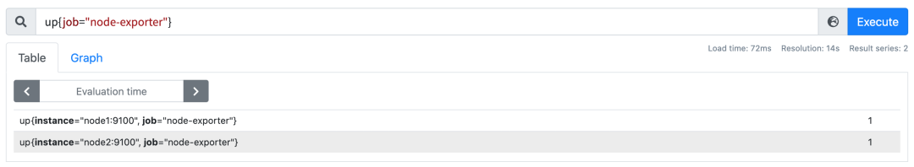
要想获取到 instance 标签中的值，我们这里可以使用一个正则表达式 .*instance="(.*?)".* 来获取实例数据，这样就成功定义了一个变量，回到 Dashboard 页面就可以看到多了一个选择节点的下拉框：
但是这个时候的面板并不会随着我们下拉框的选择而变化，我们需要将 instance 这个变量传入查询语句中，比如重新修改CPU使用率的查询语句：
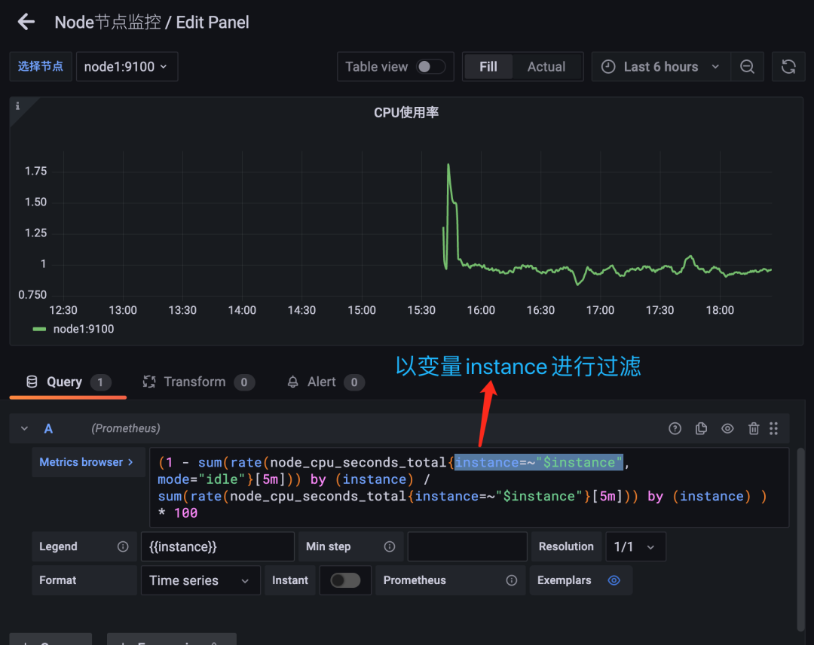
用同样的方式给内存使用率添加根据节点过滤的参数：
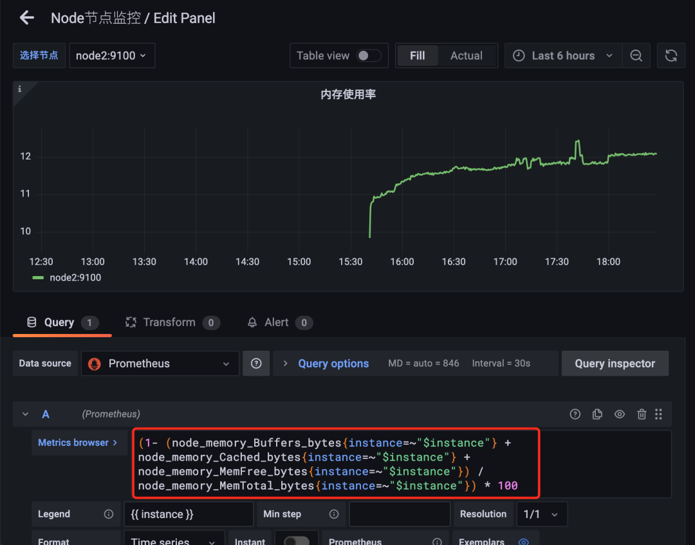
回到 Dashboard 页面就可以根据我们的下拉框来选择需要监控的节点数据了，定义参数的时候如果选择了可以选择所有，同样可以查看所有节点的数据：
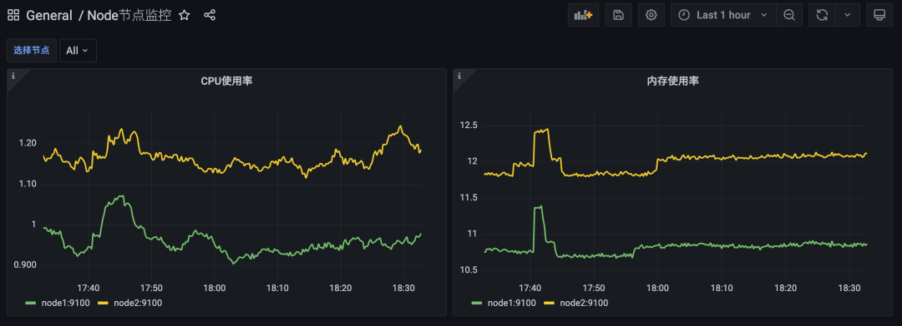